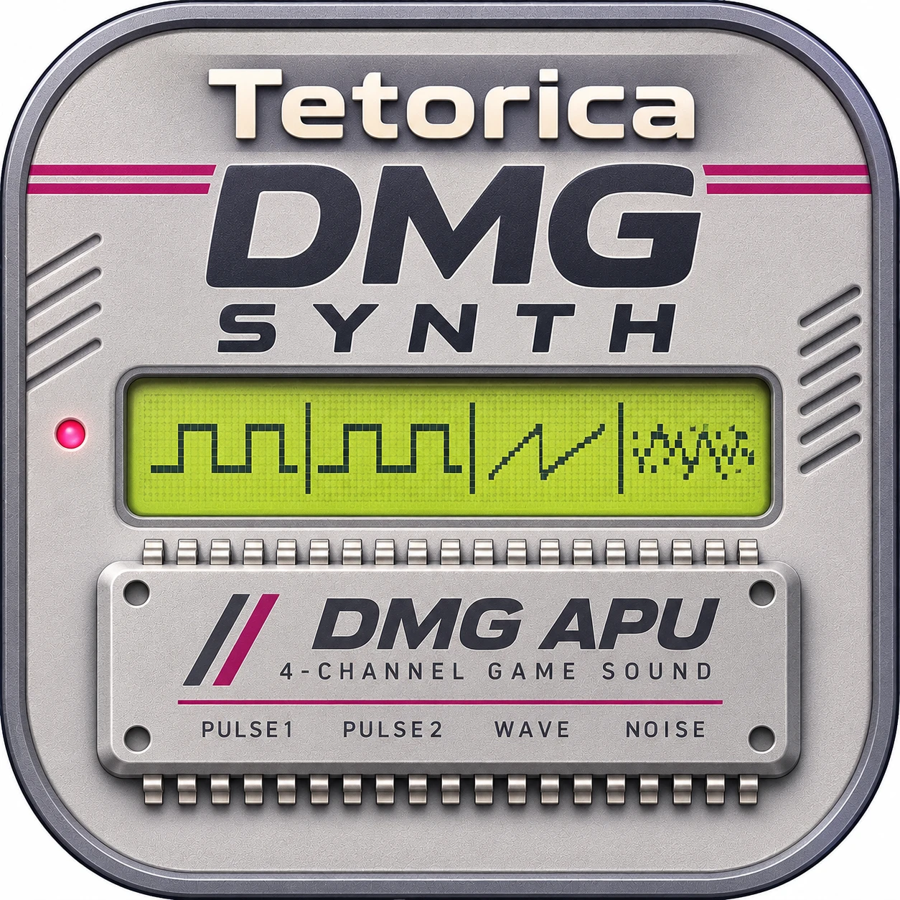

PULSE · WAVE · NOISE
Tetorica DMG Synth
Explore the sound. Draw a wave. Take the code.
Enable audio, then play the keyboard. Editing does not start audio.
Live output after Master volume.
Sounds from VGM
Choose a Game Boy VGM, then select a sound to play.
Imports initial Pulse / Wave / Noise settings. Song playback and changes during the song are not imported.
Sound source
Pulse · 2 voices · round robin
Keyboard
Every key plays the selected source. No keyboard split.